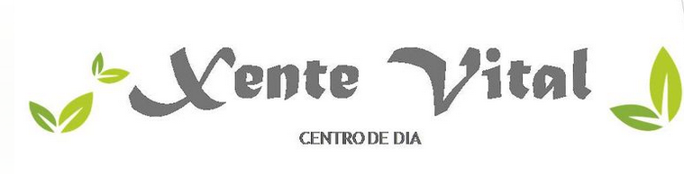

Necesidad
¿Qué necesidad/problema cubre nuestra propuesta?
Actualmente, en la sociedad, la tercera edad está quedando obsoleta, y, según los datos de la OMS, más del 20% de las personas mayores de 65 años acaban desarrollando algun tipo de enfermedad mental, ya sea por falta de actividad o motivación en su día a día.
¿A qué perfil de usuarios está destinada?
Nuestro proyecto está destinado a los ancianos, que después de la jubilación quedan apartados de la sociedad.
¿Qué importancia tiene esta necesidad para el destinatario de nuestra solución?
Los mayores pasan una media de 13 horas sentados, cuando lo ideal sería estar sentado solamente 4 horas. Según los datos del INE, en España más de 2 millones de mayores viven solos y el 40% asegura que se siente solo. Esto provoca depresión y ansiedad, y se asoció con un aumento de casi el 50 % del riesgo de demencia. Mientras que los que continúan haciendo actividades poseen mayores grados de funcionalidad. Y todo el conocimiento que han ido acumulando a lo largo de su vida se desperdicia. Sin embargo, el 43% de los ancianos quieren participar en la sociedad española y un 28% pertenece a alguna organización. Teniendo en cuenta todo lo mencionado anteriormente, nuestra aplicación tiene la capacidad de prevenir todos estos problemas.
Aproximación a la solución
¿Cuál es nuestra solución?
Nosotros proponemos poner en contacto a las personas mayores con el resto del mundo. De esta manera saldrán más de casa y se relacionarán más, y así aprenderán unos de otros.
¿De qué manera resolvemos el problema? ¿Cómo ofrecemos nuestra solución a los destinatarios? ¿Cómo funciona?
Creando una aplicación para los mayores, que contará con distintas secciones, cada una dedicada a una parte del problema. La sección de actividades, donde las administraciones propondrán actividades para que puedan divertirse pero al mismo tiempo dar a conocer todo lo que han aprendido a lo largo de su vida, o poner en práctica sus habilidades; la sección social, que tendrá un foro donde podrán compartir sus sentimientos; y la sección “Connect” donde podrán hablar con otras personas a través de una cámara.
¿Cómo conseguís que sea una propuesta sostenible?
Nosotros creemos que es una propuesta sostenible porque es un proyecto que se puede llevar a cabo fácilmente y todas las personas mayores llegarán a utilizarla ya que se puede acceder de manera fácil y en caso de que ellos no den, podrá ser la familia la que le ayude a entrar.
Beneficios
¿Qué beneficios concretos aporta vuestra propuesta?
Los beneficios que ofrece nuestra propuesta es que los ancianos se sientan más integrados en la sociedad, y que tengan cosas que hacer. De esta forma conseguimos que se sientan menos solos en su día a día y evitamos que la soledad les lleve a problemas de salud.
¿Qué mejora ofrece vuestra solución respecto a la manera como se ha cubierto está necesidad hasta ahora?
Nosotros hemos mejorado la forma en la que estaba cubriendo esta necesidad juntando todo en un mismo lugar. Porque es verdad que existen algunas soluciones y actividades para ellos pero la mayoría de mayores ni siquiera saben que existen, y con nuestra aplicación estarían todo concentrado en un mismo lugar, facilitando su utilización y que llegue a más personas. Pero, además, nosotros quisimos llevarlo un paso más allá, e innovar creando una sección con la que puedan comunicarse virtualmente desde casa con sus amigos, familiares, o interactuar con personas en su misma situación, de una manera muy fácil ya que lo único que tendrían que hacer sería decir en alto que quieren hablar con esa persona.
Colaboración
¿Con qué otros agentes pensáis contar para hacerla posible?
Necesitaremos programadores para poder crear la aplicación, aparte contaremos con la ayuda de centros de día como el Centro de día DeMaiores o el Centro de día Xente vital, que están dispuestos a utilizar la aplicación para buscar actividades a sus mayores.
¿Quiénes son vuestros aliados?
Nuestros aliados serán centros de día como, el Centro de día DeMaiores y el Centro de día Xente vital. Ya que para comprobar la utilidad del proyecto y tener opiniones externas, les preguntamos a algunos centros locales su opinión acerca del proyecto. Ambos coincidieron en que les parecía una gran idea, aunque lo mejor sería que la aplicación la puedan tener los familiares de los mayores, para aquellos que no se desenvuelven bien con las tecnologías.

¿Qué hacen?
Ellos se convertirían en usuarios de la aplicación, y con eso conseguimos que nuestra aplicación y nuestros objetivos llegarán a más personas, y pudiera ayudar a más gente.
¿Qué aportan?
Lo que ellos nos aportan es apoyo, para llegar a más personas, y nuestra aplicación será más efectiva.
Gancho
¿Cuál es vuestro mensaje clave?
Evitar la obsolescencia de la tercera edad.
¿Habéis sintetizado el concepto de vuestra iniciativa en un eslogan?
OldNow Para el mundo, que refleja totalmente nuestra iniciativa y nuestro objetivo de mejorar la sociedad actual.